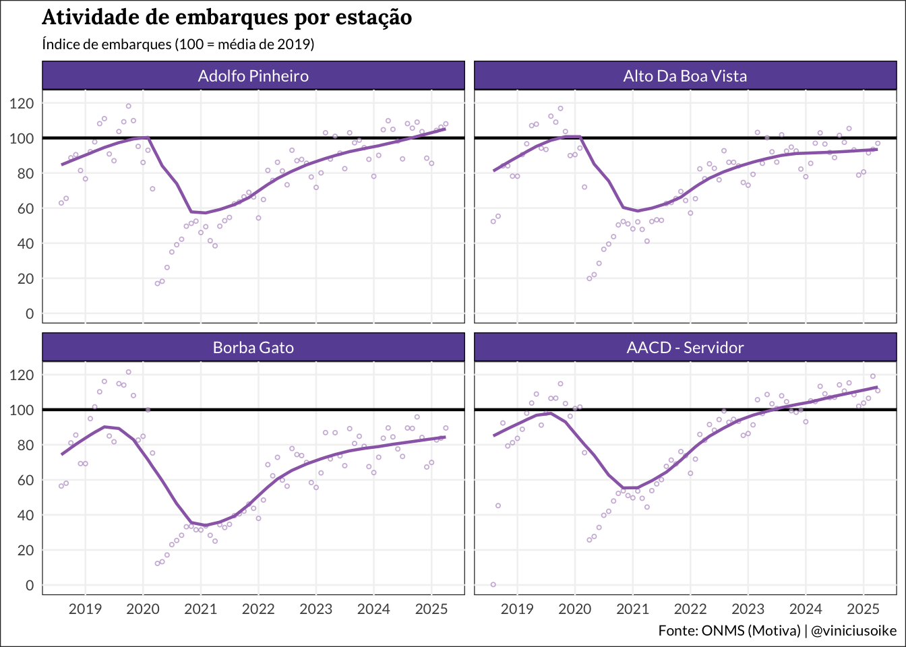
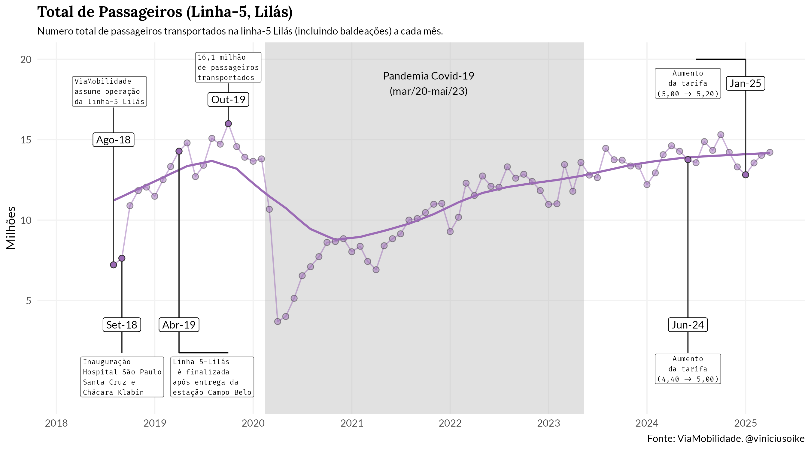
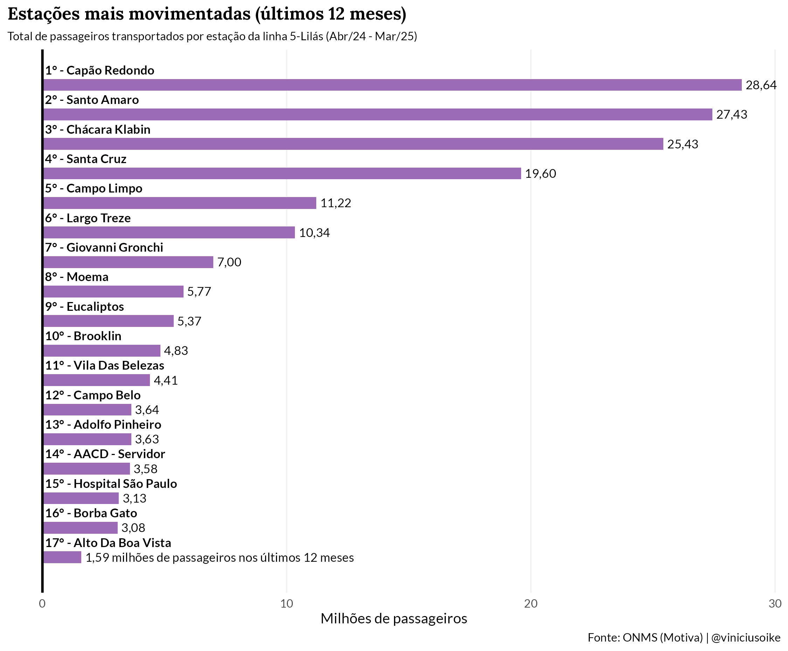
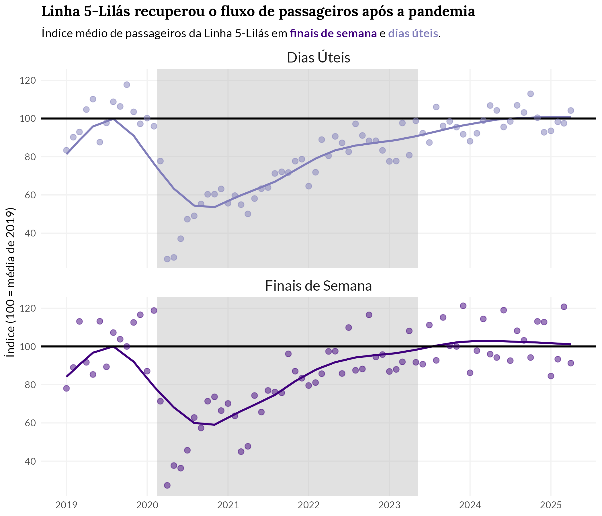
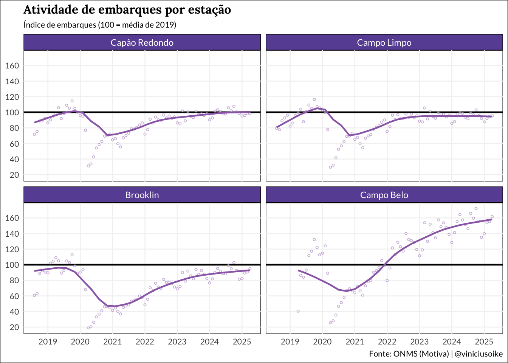
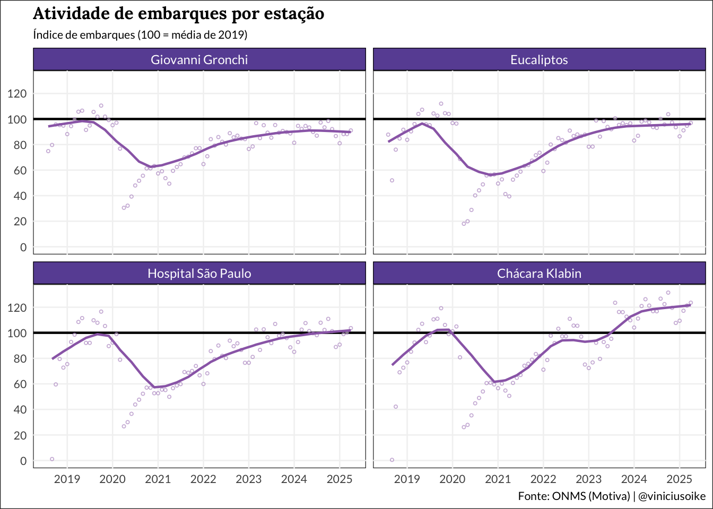
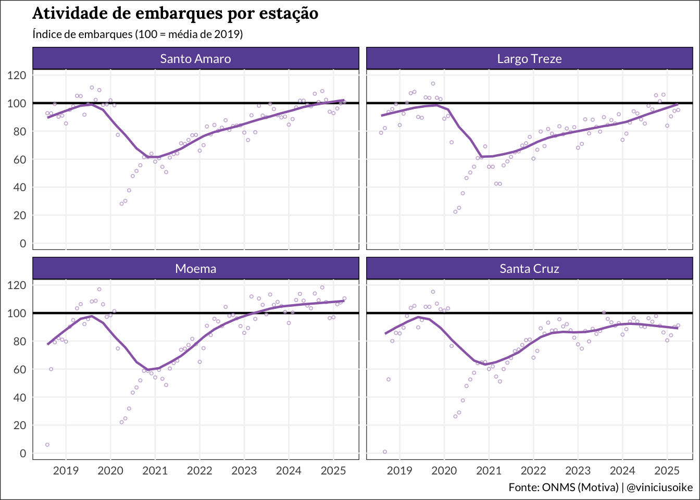

Linha 5-Lilás do Metrô
Nota: este post é uma atualização de um antigo, usando dados oficiais da Motiva. O último post fez um webscrape em cima de pdfs divulgados no site da Motiva. Já este post usa os dados oficiais, disponíveis pelo Observatório de Mobilidade do Insper neste link.
Resumo
O número de passageiros transportados pela linha 5-Lilás retornou aos níveis pré-pandemia, com recuperação completa em 2024.
Fluxo médio nos finais de semana superou os níveis pré-pandemia, alcançando 104,8% dos valores de 2019. Nos dias úteis o fluxo alcançou 101,8%.
Estações mais movimentadas são as com baldeações, reforçando o papel conector da linha-5: Capão Redondo, Santo Amaro e Chácara Klabin.
O recorde de passageiros transportados no mês foi registrado ainda antes da pandemia em outubro de 2019, com 16 milhões de passageiros.
Análise
Timeline
A operação da Linha 5-Lilás passa a ser da ViaMobilidade (Motiva) em agosto de 2018. Contudo, a linha em si só é concluída em abril do ano seguinte, com a entrega da estação Campo Belo.

A linha sólida no mapa acima mostra a estimativa da tendência da série, desconsiderando efeitos sazonais e outliers1.
Estações mais movimentadas (últimos 12 meses)
As estações com maior número de passageiros da Linha-5 são as de baldeação: Capão Redondo, Santo Amaro, Chácara Klabin e Santa Cruz.

Recuperação Pós-Pandemia
A recuperação pós-pandemia é visível tanto nos dias úteis como nos finais de semana. O gráfico abaixo normaliza as séries pela média mensal de 2019. O fluxo dos finais de semana se recuperou quase um ano antes do fluxo dos dias úteis.

Vale notar que a base de comparação pré-pandemia está um pouco subestimada o que pode levar a um diagnóstico mais otimista. Isto acontece pois a estação Campo Belo foi entregue somente em abril de 2019, então a linha não estava operando plenamente no primeiro trimestre de 2019. Ainda assim, como uma primeira aproximação, pode-se afirmar que a linha já retornou ao fluxo pré-pandemia.
O painel abaixo repete o mesmo exercício (sem diferenciar dias úteis de finais de semana) para cada uma das estações. De maneira geral, todas as estações seguem o mesmo padrão de recuperação; contudo, algumas como Borba Gato e Alto da Boa Vista continuam abaixo dos níveis pré-pandemia.
A distorção do período-base fica mais notável na análise da estação Campo Belo que tem um fluxo de passageiros muito baixo no seu primeiro mês de operação.



Mapa da Linha-5
O mapa abaixo mostra o trajeto de linha, incluindo as estações futuras, destacando o fluxo diário médio nos dias úteis e nos finais de semana. Os dados incluem somente o fluxo de janeiro a abril de 2025.
Footnotes
A tendência foi estimada usando um filtro Season-Trend-Loess (STL) com janela sazonal de 11 períodos e com um estimador robusto a outliers.↩︎